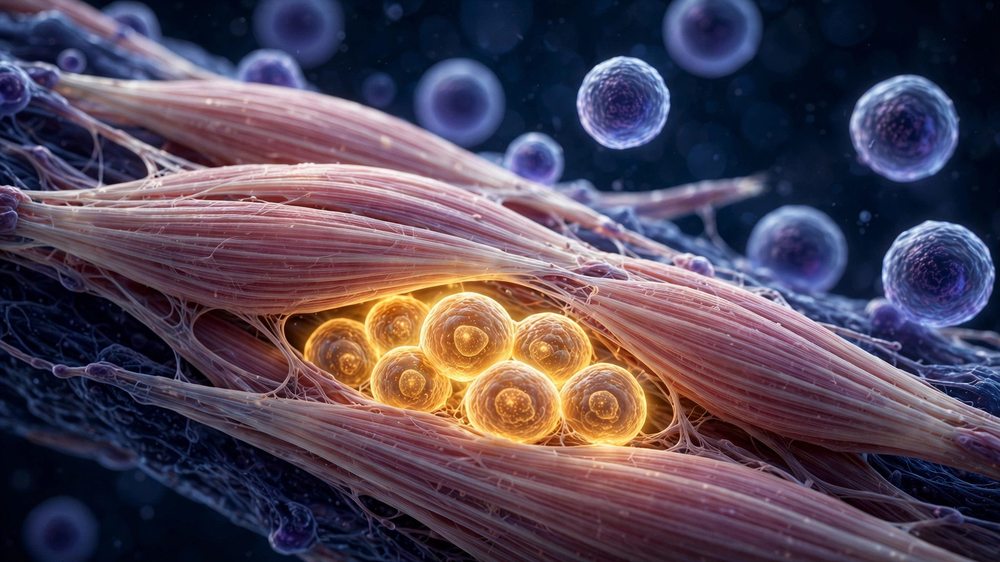

One Man's Forearm Has Been Making Insulin for 14 Months. He Has Never Taken an Anti-Rejection Drug.

Seventy-nine point six million. That is the number of gene-edited pancreatic islet cells that surgeons at Uppsala University Hospital injected into the forearm muscle of a 42-year-old Swedish man with Type 1 diabetes in early 2024, spread across 17 microinjections into the brachioradialis, a muscle most people only notice when they carry groceries. He had been diabetic for 37 years, with an HbA1c of 10.9%. He had no measurable C-peptide, the biomarker that indicates your own body is producing insulin. He was, in clinical shorthand, as far gone as a Type 1 patient gets without being in crisis.
He received no immunosuppressive drugs. Not before the transplant, not during, not after. None.
Fourteen months later, those cells are still alive. They are still producing insulin. His immune system, which efficiently destroyed the unedited control cells within weeks, has not touched them. In March 2026, Sana Biotechnology reported that C-peptide levels at month 14 remained comparable to those measured in the first six months, and that improved blood-glucose control appeared to enhance islet function over time. The company will present updated data at the European Association for the Study of Diabetes meeting in Milan this October.
This is a single patient who received 7% of a therapeutic dose and still takes insulin. But what happened in his forearm is the first demonstration in a living human that transplanted cells can be engineered to evade the immune system entirely, without drugs, without encapsulation devices, and the implications extend far beyond diabetes.
Three Edits and a Shield
The recipe is almost absurdly simple in concept. Sana's hypoimmune platform, or HIP, makes three changes to donor cells using CRISPR-Cas12b and lentiviral transduction. First, knock out B2M, the gene encoding beta-2-microglobulin, which eliminates all HLA class I proteins from the cell surface. Without class I, the cell is invisible to CD8+ killer T cells. Second, knock out CIITA, the master regulator of HLA class II expression. Without class II, the cell cannot activate CD4+ helper T cells. Adaptive immunity, the entire apparatus that recognizes foreign tissue and orchestrates rejection, goes blind.
But strip away both HLA classes and you create a new vulnerability, one that evolution built for exactly this scenario: natural killer cells, the innate immune system's patrol for things that look wrong by looking like nothing, start treating the bare cell as a target. So HIP adds a third modification: overexpression of CD47, a surface protein that sends a "don't eat me" signal to macrophages and, critically, also inhibits NK cell killing. Published in the NEJM in August 2025, the granular immunology data told a stark story. Wild-type cells in the transplant triggered strong T-cell and antibody responses and were destroyed. Cells with only the HLA knockouts but normal CD47 levels were killed by innate immune cells. Fully edited HIP cells caused zero T-cell activation, zero NK-cell killing, zero antibody induction, and proved resistant to complement-mediated cytotoxicity. Three edits and a shield. Complete immune silence.
200 Years of Division
Now for the math that hurts. Uppsala's patient received 79.6 million cells, roughly 7% of the 11,547 islet equivalents per kilogram that the Edmonton Protocol established as a therapeutic dose for insulin independence. At an estimated body weight of 63 kilograms, a full dose for this patient would require approximately 1.14 billion edited cells.
UP421, the product used in this trial, was made from cadaveric donor islets, and one donor pancreas typically yields 300,000 to 400,000 islet equivalents under optimal isolation conditions, barely enough for a single patient at therapeutic dose. According to the CDC, approximately 1.6 million Americans live with Type 1 diabetes. About 8,000 donor pancreases per year are recovered in the United States suitable for islet isolation.
Divide 1.6 million by 8,000 and the answer is 200 years, not a projection, not a model, just arithmetic.
Which is why Sana's next candidate matters more than its first. SC451 is a stem cell-derived version of the same therapy, manufactured from a master cell bank of gene-edited induced pluripotent stem cells that can, in theory, produce unlimited quantities of HIP-modified beta cells. Sana's CEO Steve Harr told investors in March 2026 that the company expects to file an IND and begin a Phase 1 trial as early as this year. "In theory" is doing enormous work in that sentence, because building a stable, tumor-free master cell bank from gene-edited iPSCs remains, in Harr's own characterization, the hardest problem his company faces; genomic instability after CRISPR editing can produce tumor-forming mutations, and differentiation protocols must coax stem cells into functional islets without generating unintended cell types along the way. "You're going from a stem cell to an islet," Harr told the American Chemical Society. "What you don't want is that along the way you make a little bit of stomach."
$1.13 Million per Patient, or One Shot
Managing Type 1 diabetes in the United States costs an average of $18,817 per patient per year in direct medical expenditures, with $11,002 attributable to diabetes-specific care and the rest flowing to cardiovascular, renal, and neurological complications that accumulate silently over decades, the kind of costs that don't appear in any single insurance claim but show up in every actuary's long-term liability tables. National insulin spending alone tripled from $8 billion in 2012 to $22.3 billion in 2022, according to the American Diabetes Association, and total economic burden reached $412.9 billion that year, including $106.3 billion in lost productivity.
A person diagnosed with T1D at age 10 who lives to 70 will accumulate roughly $1.13 million in direct healthcare costs over their lifetime at current rates. That figure excludes the insulin pump replacements every four years ($6,000 to $8,000 each), continuous glucose monitors ($3,000 to $5,000 annually), emergency hospitalizations for diabetic ketoacidosis ($25,000 per episode), and the productivity losses from a disease that never takes a day off. A one-time cell therapy that achieves insulin independence, even priced at $500,000, would generate net savings exceeding $630,000 per patient in direct medical costs alone over a 60-year horizon, before discounting. Apply a 3% discount rate and net present value of savings still exceeds $250,000.
Cell and gene therapies currently on the market range from $373,000 (Zolgensma's net price after rebates) to $3.5 million (Lenmeldy for MLD). A curative T1D therapy would sit at the lower end by any reasonable pharmacoeconomic model. Payers would cover it, so the question reduces to whether anyone can manufacture it.
Beyond Diabetes
HIP's three-gene edit is cell-type agnostic. Knock out B2M, knock out CIITA, overexpress CD47. Any cell. Any donor. Any recipient. The transplant waitlist in the United States currently stands at 103,223 people, with 86% waiting for kidneys. Seventeen die each day waiting, and in 2024, 48,000 transplants were performed and still could not keep pace.
Two clinical trials are now actively recruiting to test CRISPR-edited HLA knockouts in whole organ transplants: NCT07053488 for donor livers and NCT07053462 for donor kidneys, both Phase 1/2, both sponsored by the American Organ Transplant and Cancer Research Institute. Rather than editing dispersed cells in a lab, these trials place donor organs on normothermic machine perfusion, keeping them alive outside the body, then treat the entire organ ex vivo with CRISPR-Cas9 to knock out HLA-A, HLA-B, and CIITA before transplantation, a procedure that sounds like science fiction and is, as of this writing, actively enrolling patients. If immune evasion works in whole organs the way it works in Sana's islet cells, consequences cascade: reduced or eliminated immunosuppression, fewer post-transplant infections and cancers, longer graft survival, and a potential expansion of the donor pool to organs currently rejected for HLA mismatch.
Why It Might Not Work
One patient at 7% of a dose, and that deserves repeating before anything else is said about what comes next. The trial was designed to prove survival and safety, not efficacy, and whether CD47 overexpression carries long-term cancer surveillance risks by instructing the immune system to ignore cells that might someday become malignant remains an open question that no 14-month follow-up can answer. Sana's financial position underscores just how far this technology sits from patients: $101.1 million in cash at end of Q1 2026, roughly $37 million per quarter in burn, zero revenue in its history, a stock price of $3.15 down from a 52-week high of $6.55. Market capitalization: $877 million, with a cash runway to mid-2027. A company that proved immune evasion in a human being is worth less than a midsize Manhattan office building and entirely dependent on further financing to reach Phase 1 with SC451. Making cells invisible is solved. Making a trillion of them, safely, reproducibly, from a single master cell bank, without generating tumors along the way? That is an entirely different class of problem, and no one in the industry has cracked it at commercial scale.
What We Don't Know
All analysis here rests on a single case report published in the NEJM and company-reported follow-up data. No independent replication exists. Seven percent of therapeutic dose was chosen for safety, not to test whether HIP islets can achieve insulin independence at full dose, and the forearm implantation site was selected for monitoring and retrievability rather than therapeutic optimality; the Edmonton Protocol uses the hepatic portal vein. Long-term data on CD47 overexpression and cancer immunosurveillance in humans does not exist. Cost calculations use 2022 ADA data and assume no change in insulin pricing, diabetes management technology, or payer structures over a 60-year horizon. Illustrative, not predictive.
The Bottom Line
A man in Uppsala, Sweden has cells living in his forearm that his immune system cannot see, cells from a stranger's body, unshielded by any drug, producing insulin for over a year. That fact, standing alone, is the most important result in transplant biology since cyclosporin A was approved in 1983.
But between that proof and 103,223 Americans on the transplant waitlist sits a manufacturing problem nobody has solved, inside a company with 18 months of cash. Science is 40 years ahead, engineering is catching up, and the business model is barely born. If you work in transplant medicine, regenerative biology, or cell therapy manufacturing, watch the EASD data in October and Sana's IND filing timeline; the distance between this proof and clinical reality will be measured in manufacturing yields, not immunology. If you manage T1D, the honest timeline for a commercially available immunosuppression-free cell therapy is five to ten years at the earliest, contingent entirely on whether SC451's manufacturing scales. If you invest in biotech, note the asymmetry: a company worth less than a midsize office building holds the only human proof that transplanted cells can survive without immunosuppression, and its cash runs out next year.